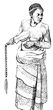
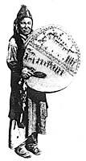

|
BaKuba Priestess In the Congo women often acted as ceremonial leaders and exerted political power. Traditional histories refer to female chiefs like Ruwej of the BaLunda and Mwadi Kapuk of the Ampimin. The Amalas, Amatab and Anzanang were originally governed by women. Some BaLunda titles show that offices now held only by men were once filled by women: Mwad Mwish, First Female Pillar; Mwad Chilab, First Courageous Woman; and Runkonkish wa Mpat, who oversaw chief selection. This lady is swathed in Kasai velvets, the raffia pile cloth that BaKuba women embroider with rich patterns.
 Ecstatic priestesses were active across the central Asian steppes and the far reaches of north Asia. A Siberian proverb declares, "Woman is by nature a shaman," and the Buryat Mongols say that the first shaman was a woman. Epics of the Turks, Tatars and Manchus sang of the exploits of female shamans, like the maiden Kubaiko who descended to the underworld to rescue her slain brother. This central Asian priestess has painted her visions on the sacred drum by which she journeys across the worlds.
In the mass of disinformation about Indian nations, most books omit records of women leaders such as Wetamu, Aliquippa, Nanyehi, Lozen, and Awashonks. There were women chieftains on the Columbia river. In California the eastern Pomo had female chiefs called da-halik. The Haudenosaunee (Iroquois) and the Dineh (Navajo) still have powerful councils of women elders active today. This image appeared in a turn-of -the-century US government ethnology bulletin bearing only the designation "Kwakiutl Chieftainess."
Some hill peoples of Thailand and Yunnan are matrilineal and matrilocal, such as the Karen, Musuo and Nakhi. Women head Musuo families, and couples are free to form azhu ("friendly") spousals. Clan priestesses lead ceremonies of their Daba religion, whose major deity is the goddess Ganmu. The Lahu peoples reckon descent in both female and male lines. Their young women often take the initiative in courting male visitors, and legend explains why the men participate in childcare and fetching water and firewood. This Lahu Na woman is celebrating the New Year in festival dress, with a mouth organ in hand.
|
Copyright 2000 Max Dashu
Shamanic | Deasophy | Kindreds | Order